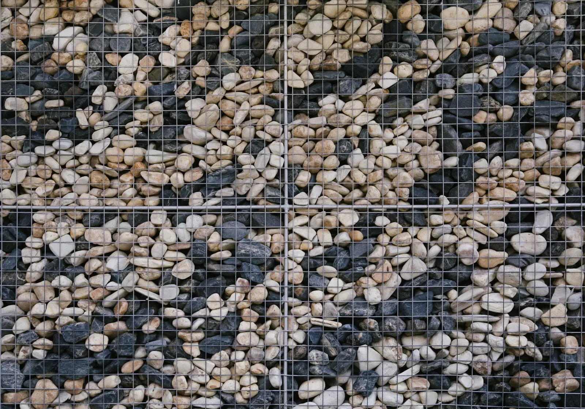
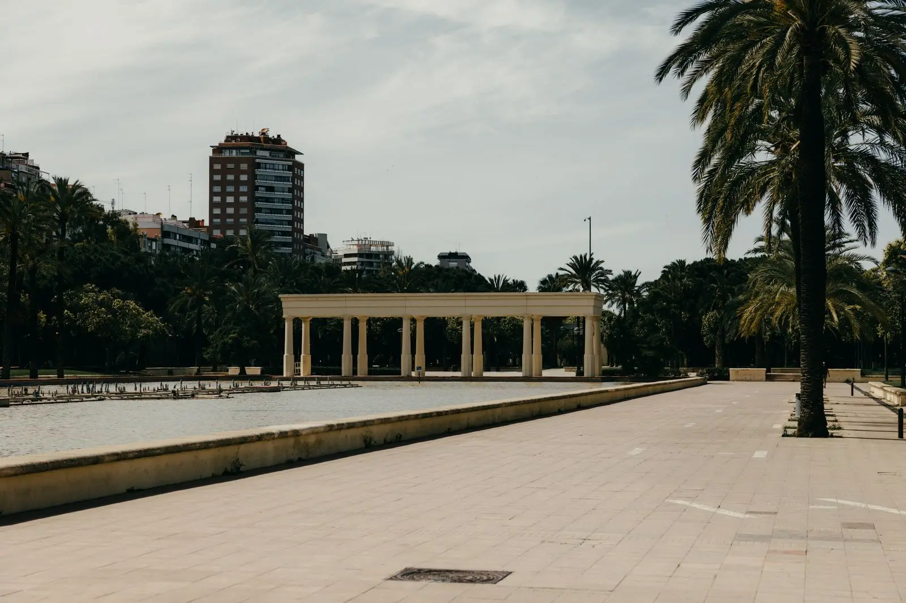
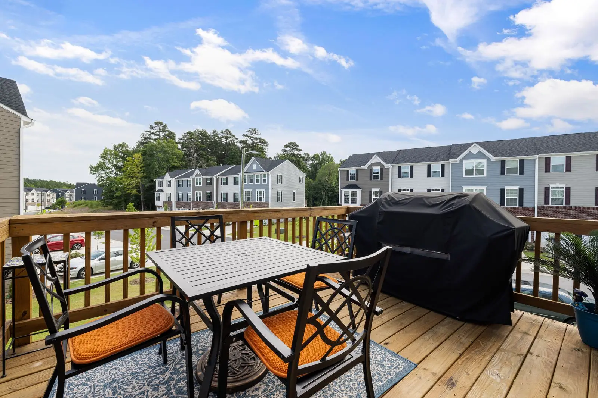
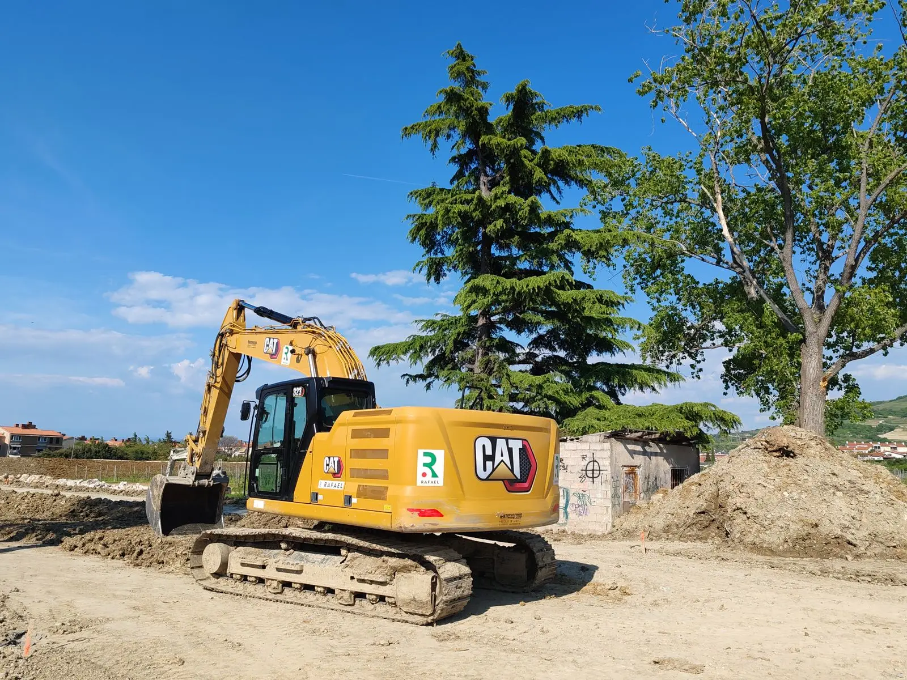

Hardscape & paving
Interlocking, flagstone and permeable paver applications.
Terragon Site Construction Ltd.
Hardscape & paving, Retaining walls, Concrete & asphalt — Ontario (based in Bolton).
What we do
Interlocking, flagstone and permeable paver applications.
Modular retaining walls, CIP retaining walls and concrete planter walls.
Concrete sidewalks and curbs plus asphalt works.
Planting, soft landscaping, irrigation and artificial turf.
Pergolas, outdoor kitchens, detailed carpentry, playground and fitness structures.
Metal and wood fencing, miscellaneous metals and glass works, site furniture.
About
From unique urban landscapes to the surroundings of your luxury retreat, Terragon has been part of what makes Ontario beautiful since 1992. Formerly Terragon Landscaping Ltd., the company is based in Bolton, Ontario and completes projects of any size and complexity on schedule.
Gallery
Sample imagery from Pexels standing in for Terragon Site Construction Ltd. projects — to be replaced with real project photos.






Service area
Enquire
Tell us about your project and we’ll get back to you.
Email: info@terragon.ca · Estimating: estimating@terragon.ca
What this demo improves